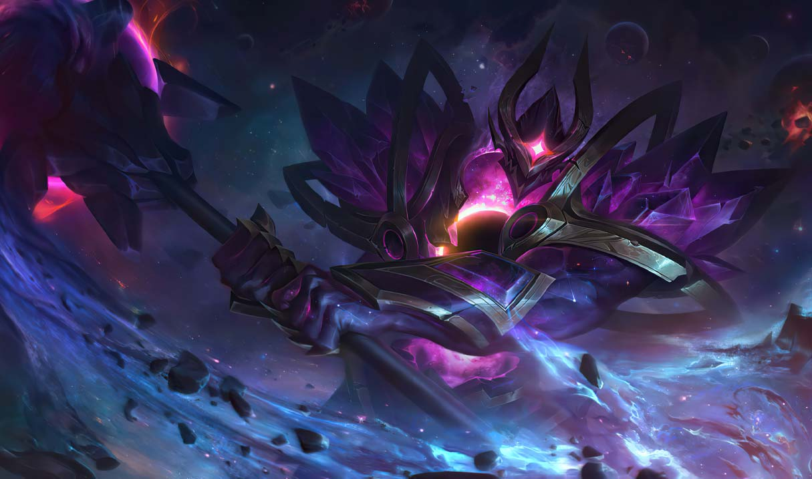
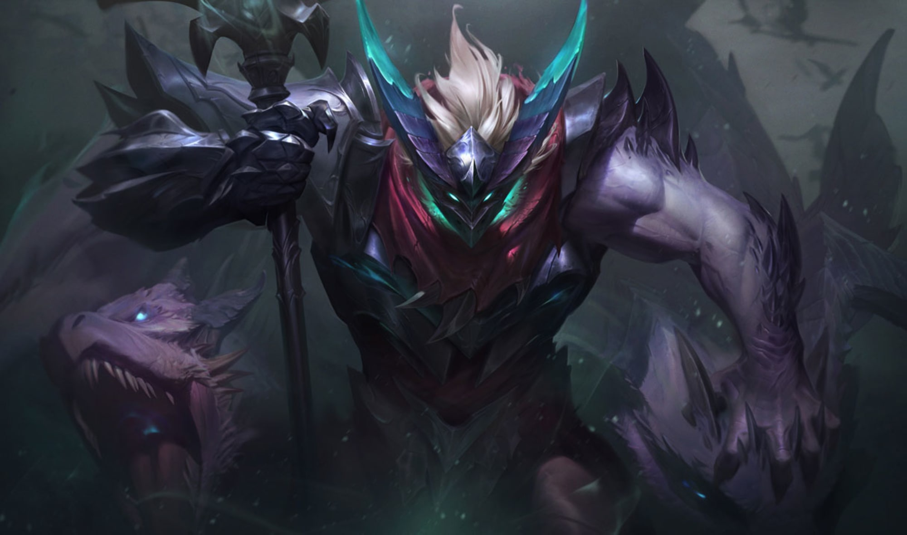
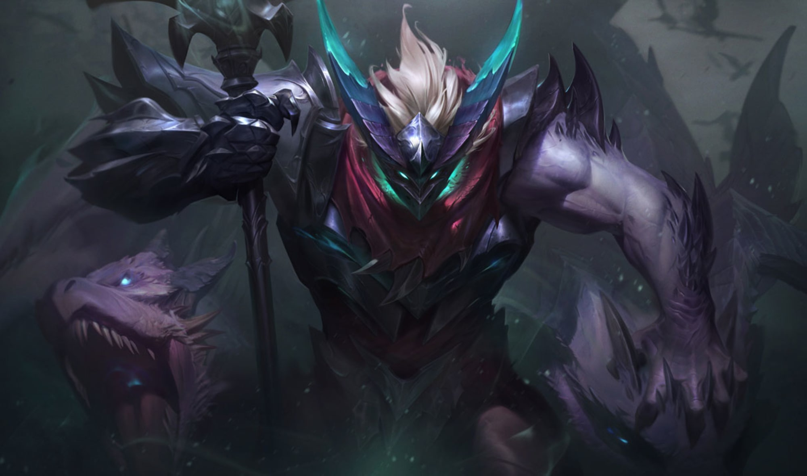

Mordekaiser, a vaslidérc

Egy letűnt korban a rettegett hadúr, Sahn-Uzal dúlta fel az északi pusztaságot. Sötét hitétől vezérelve minden útjába kerülő törzset és települést elpusztított, hogy a vérből és a halálból felépítse új birodalmát. Amikor halandó léte a végéhez közeledett, nagy elégedettséggel gondolt arra, hogy kétségkívül az örökkévalóságig szóló helyet szerzett magának az istenek asztalánál a dicsőséges Csontok Csarnokában. A halál után azonban se csarnok, se dicsőség nem várt rá. Ehelyett Sahn-Uzal egy üres, szürke pusztaságban találta magát, amelyet sosem oszló köd takart, és zavaros suttogások töltöttek be. Olykor más elveszett lelkek is a közelébe sodródtak, ezek a szellemeknél alig kivehetőbb alakban rótták saját elátkozott útjukat az örök feledésben. Sahn-Uzal forrt a dühtől. Hát hiábavaló volt a hite? Vagy a világ leigázása egyszerűen nem volt elég ahhoz, hogy jutalmul megkapja az olyannyira áhított halhatatlanságot? Ez az üresség biztosan nem lehet a végső állomás... bár úgy tűnt, sosem lesz vége. Figyelte, ahogy az alsóbbrendű lelkek beleolvadnak a ködbe, és szertefoszlanak a múló időben. Sahn-Uzal azonban nem akart eltűnni. Dühtől és gyötrelemtől fűtött akarata nem engedte, hogy megsemmisüljön. Idővel a felismerhetetlen, testetlen suttogás szinte már értelmes szavakká kristályosodott – amint megtudta, ez az istentelen nyelv az ochnun volt, amelyet az élők világában senki sem beszélt. Lassan egy álnok terv kezdett körvonalazódni Sahn-Uzal megtépázott elméjében. A világokat elválasztó leplen át csábító ígéreteket kezdett suttogni, amelyekben rettenthetetlen erejét ajánlotta fel mindazoknak, akik nem féltek meghallgatni őt. Hamarosan pedig az a nap is eljött, amikor varázslók egy csoportja elhatározta, hogy visszahozza Sahn-Uzalt a halálból. Testetlen lényként arra ösztökélte őket, hogy minden halandónál erősebbé tegyék, és szellemalakját olyan sötét fémpáncélba burkolják, mint amilyet életében viselt. Így kelt hát életre újra, a vas és a gyűlölet hatalmas szellemeként. A hataloméhes varázslók azt remélték, hogy hétköznapi csatározásaikban fegyverként használhatják őt. Ehelyett ő ott, helyben lemészárolta mindet, és ebben sem fegyver, sem mágia nem akadályozhatta meg. A kétségbeesett varázslók a nevét kiáltották, hogy megfékezzék, de hiába, mert Sahn-Uzal már nem létezett. Éterien dörögve mondta ki szellemnevét ochnun nyelven: Mordekaiser. Ezzel megkezdődött második hódító hadjárata a halandók világa ellen. Ahogy mindig, most is nagyra tört, de ezúttal olyan hatalmas, túlvilági erő volt a birtokában, amilyet korábban el sem tudott képzelni. A varázslók rettegve szertefoszló lelkéből a halál császárához illő fegyvert kovácsolt – ez lett brutális buzogánya, az Alkonyat –, és a saját maga által teremtett hadsereg élére állt. Ellenfelei számára úgy tűnt, Mordekaisert pusztán a mészárlás és a pusztítás élteti. Könyörtelen hadjáratai nyomán egész generációk vesztek oda. Mordekaiser terve azonban ennél jóval többről szólt. Birodalma szívében felépítette a Halhatatlan Bástyát, amelyet a legtöbben csak a hatalom központjaként tartottak számon, néhányan azonban megismerhették a valódi titkát is. Mordekaiser szomjazta az összes tiltott tudást, amit a szellemek, a halál és a túlvilág… vagy túlvilágok adhattak. Az efféle zsarnoki uralommal csak ellenfeleket szerezhetett magának. A Vaslidérc legyőzetett, meglepő módon a noxusi törzsek szövetsége által és a saját belső köréből végrehajtott árulás révén. E rejtett összeesküvés során sikerült elszakítani a lelkét a páncéljától, majd egy ismeretlen helyen elzárni az üres vasvázat. Ezzel Mordekaisert száműzték az anyagi világból. Azt azonban senki sem tudta, hogy ő számolt ezzel a lehetőséggel – sőt, valójában ez is a terve kulcsfontosságú része volt. A hatalom és a ravaszság messzire juttatta, de ő tudta, hogy a Csontok Csarnokánál jóval nagyszabásúbb végzet vár rá. Ott, a hajdan üres pusztaságban összegyűlt minden lélek, aki Mordekaiser legutóbbi uralma alatt esett el. Fekete mágiával megrontott szellemük nem tudott elenyészni. A legerősebbekből válogatta össze hűséges, halhatatlan seregét, amely vakon követte a parancsait… de a gyengéknek is jutott szerep. Lelkük finom anyagából Mordekaiser új birodalmat akart kovácsolni. Azt tervezte, ezek lesznek majd az építőkövei az általa uralt Túlvilágnak. Runaterrán évszázadok teltek el, és a Halhatatlan Bástya körül új birodalom épült ki. Mordekaiser nevét még mindig félelemmel vegyes csodálattal ejtik ki azok, akik a régmúlt történelmét tanulmányozzák, az a néhány ősi lélek pedig, aki még ismerte, igyekszik szabadulni az emléktől. Számukra az jelenti a legnagyobb fenyegetést, hogy Mordekaiser egyszer megtalálja a módját, hogy végleg visszatérjen. Azért imádkoznak, hogy ez ne következzen be, hiszen többé senki sem tudná megállítani őt.
További kinézetei:
 
